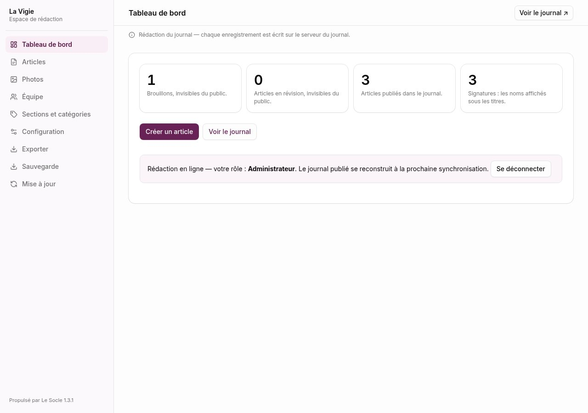
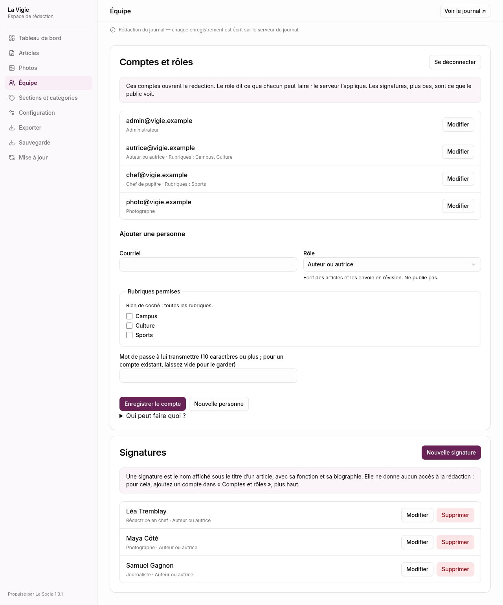
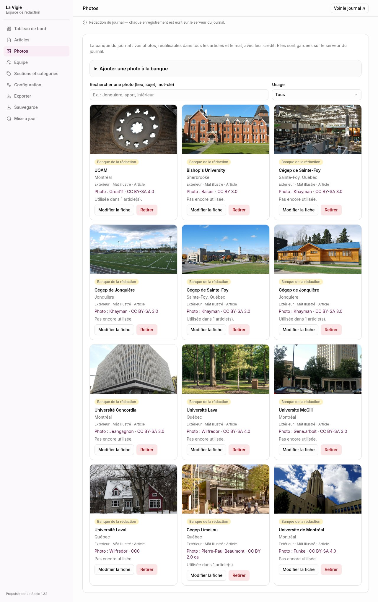
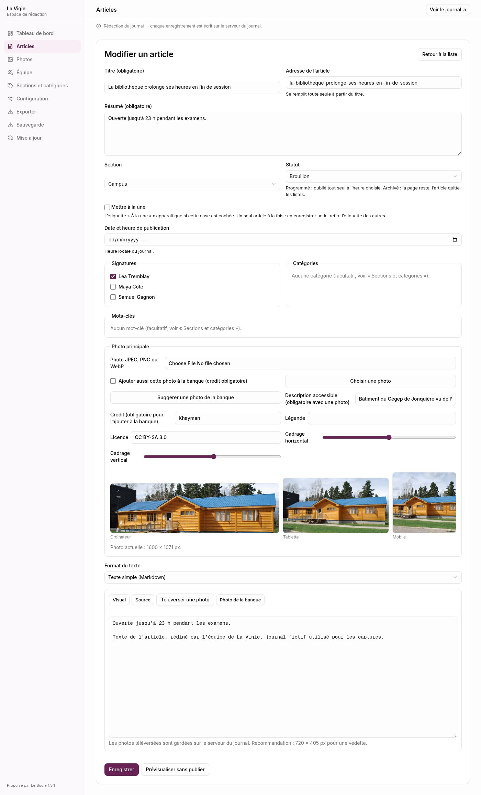
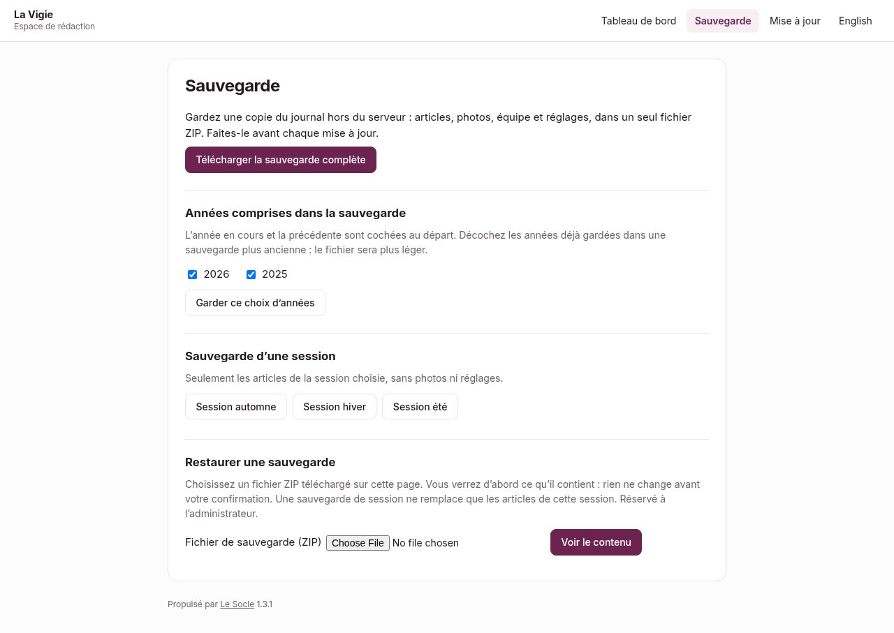
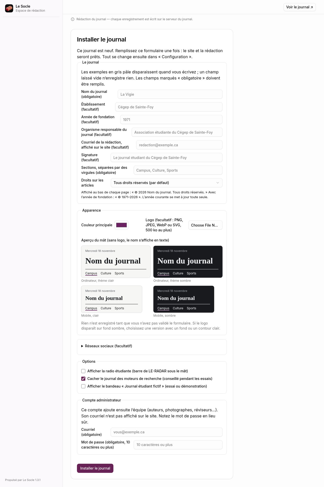

Auteur
Écrit ses articles et les met en révision. Ne publie pas.
Interface d’administration · Licence GPL
Système Ouvert de Collaboration en Ligne pour l’Édition
On y écrit les articles, on gère les photos, les rôles, les sauvegardes et les mises à jour. Chaque journal installe sa propre copie, sans aucun serveur central.
Le Socle est le programme de l’espace de rédaction. Dans le cas le plus simple, il arrive déjà dans le paquet complet du Kiosque.

L’équipe
Ce que le navigateur affiche ne suffit pas : le serveur applique les droits. Un auteur ou un chef de pupitre peut être limité à certaines rubriques ; hors de celles-ci, même un brouillon est refusé.
Écrit ses articles et les met en révision. Ne publie pas.
Gère la banque de photos (ajout, crédit, licence, retrait). N’écrit pas d’articles.
Relit, publie et retire tous les articles.
Relit, publie et retire les articles de ses rubriques seulement.
Tout le contenu, plus les sections et la configuration.
Tout, plus l’équipe, la sauvegarde et les mises à jour.


Le travail quotidien
L’éditeur enregistre ce que l’on voit. On peut prévisualiser un article dans le thème, sans le publier. Une sauvegarde complète tient dans un fichier ZIP, à garder hors du serveur ; la même page restaure une archive. Quand une version est publiée, la page Mise à jour la propose en un clic.



Comment l’obtenir
Le chemin recommandé est le paquet complet de la plateforme : un fichier ZIP, un assistant dans le navigateur, le site public et l’espace de rédaction ensemble. Le Socle peut aussi tourner seul, en PHP, avec Node, ou dans un Worker Cloudflare. Le guide d’adoption est dans le dépôt.
Le guide d’une page s’adresse à un étudiant qui n’a jamais rien installé. La démonstration Le Quorum montre le site public et, en mode démonstration, l’espace de rédaction.
Le logiciel est sous licence GPL version 2 seulement. Les articles et les photos appartiennent au journal. Les composants tiers sont listés dans THIRD_PARTY.md.